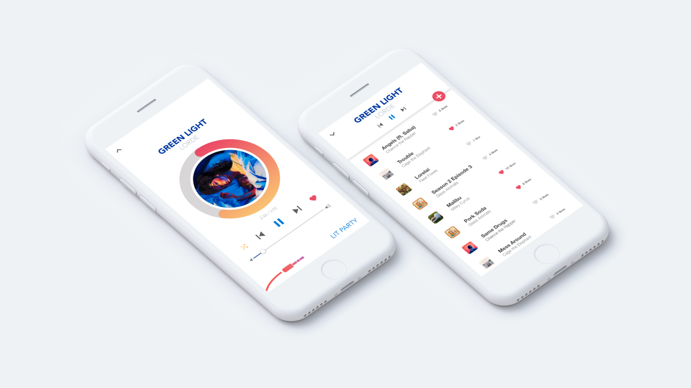

Aux
Aux, a mobile app, revolutionizes how users share music by making it easy to create live collaborative playlists.

Main Image
----------------
Preserve: UI/UX Design & Frontend
SCOPE:
ROLE: Full design, UX thinking to UI illustrations, Frontend development
Preserve is a mobile application that allows users to more easily keep track of their fresh produce and pantry items and when they will expire. It is a food management app that makes handling expiration dates faster and easier by scanning receipts through OCR technology and providing timely notifications.

Main Image
PROBLEMS
IDEAS
----------------
MDB Logo
Mobile Developers of Berkeley, UC Berkeley's premier mobile incubator, rebranded as one of the steps towards becoming an app development agency.